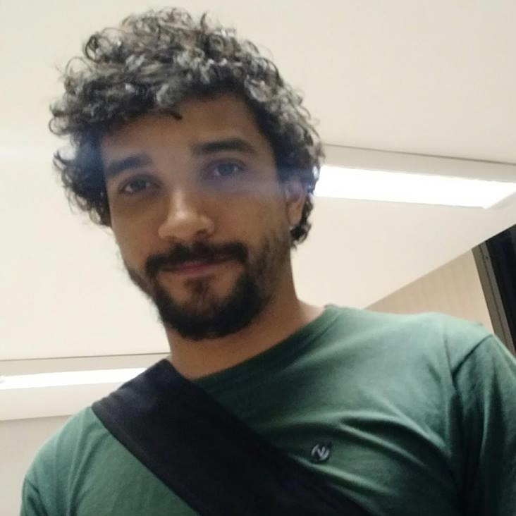
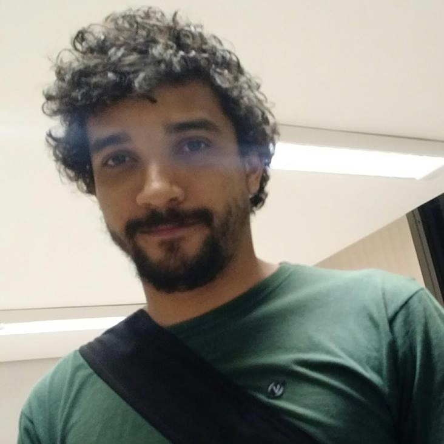

Brasileiro, paraense e adotado por Goiânia-GO, Edionay estuda Engenharia de Software na Universidade Federal de Goiás (UFG), é morador da Casa de Estudantes Universitários e bolsista no Núcleo de Acessibilidade, onde trabalha com tecnologias assistivas e usa este domínio para aplicar seus conhecimentos e experiência adiquirida na área.